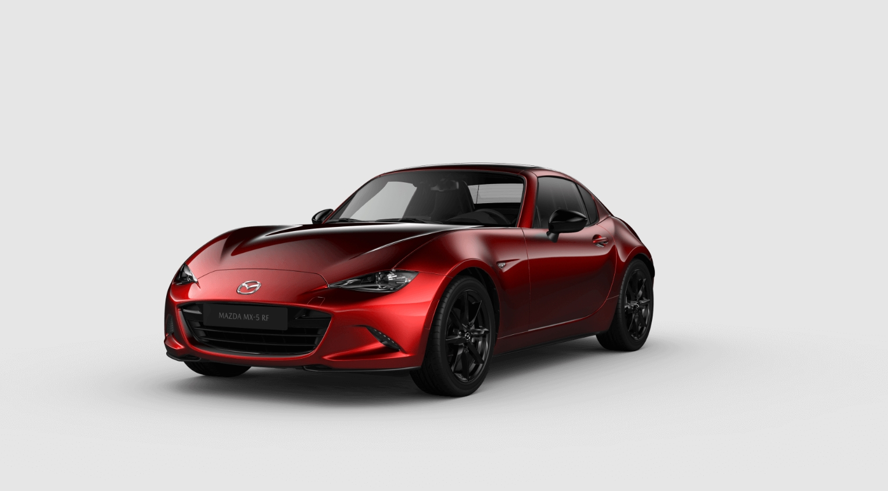
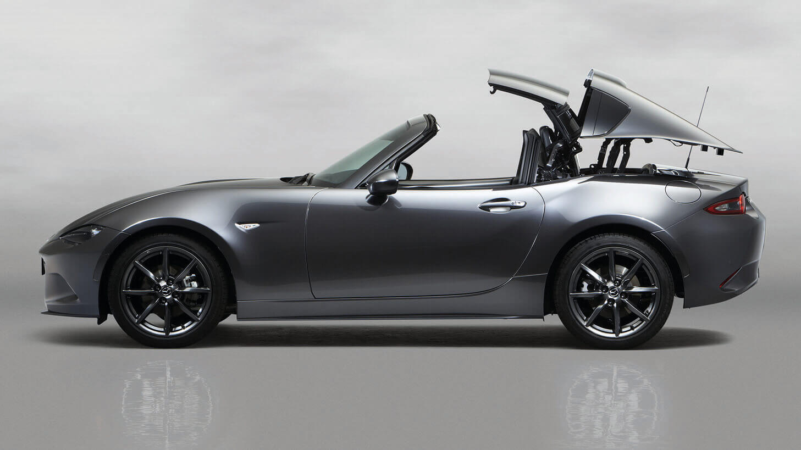
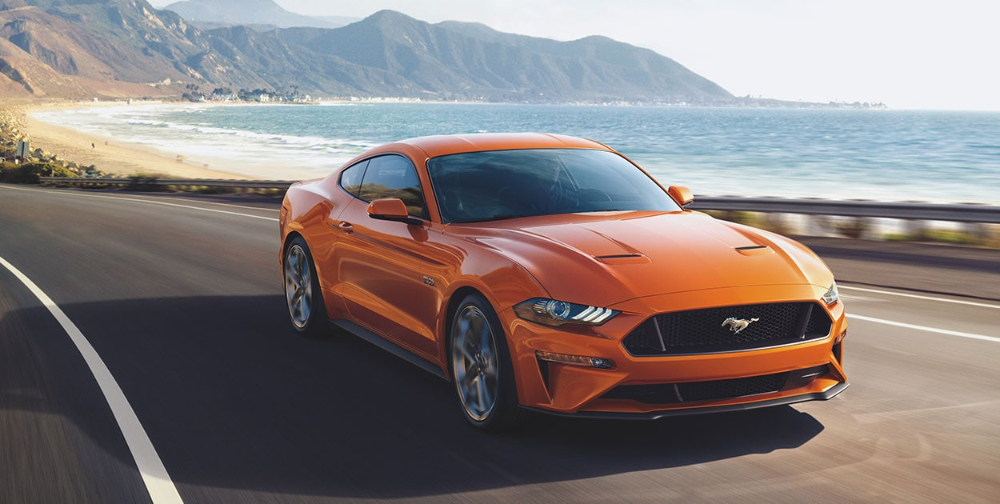
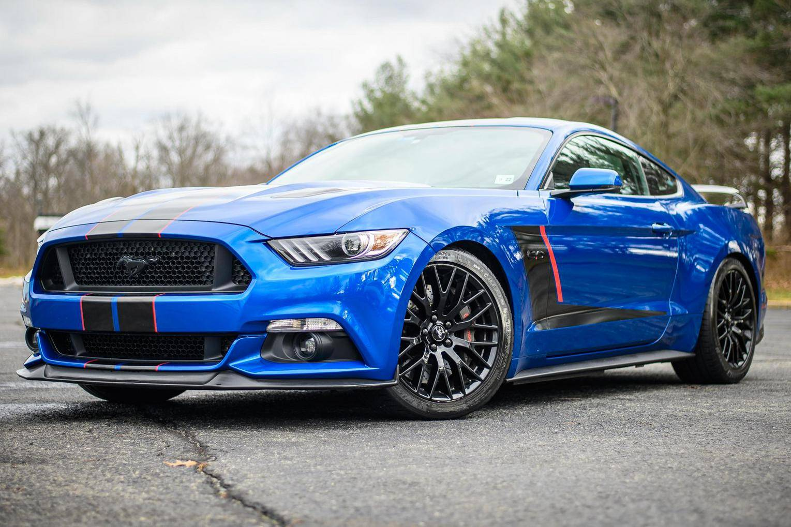
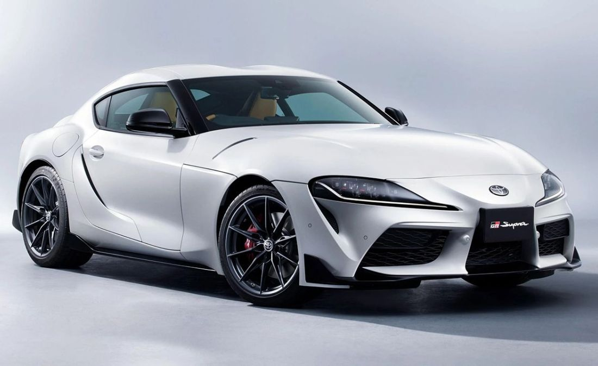
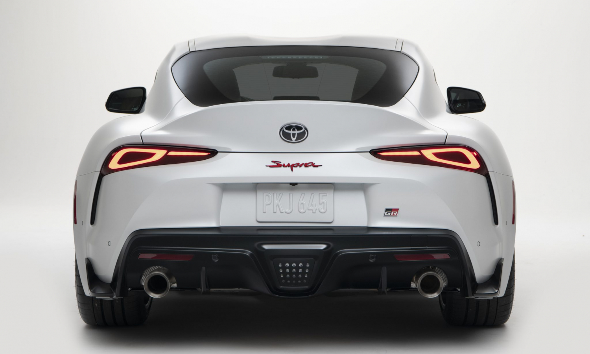

Carros Deportivos
Mazda MX-5
Si buscas un carro deportivo, pequeño y con tracción trasera, el Mazda MX-5 es el modelo perfecto para ti.
De hecho, es uno de los pocos vehículos deportivos con tracción trasera y está diseñado para ofrecer el
máximo rendimiento y una experiencia de manejo a la medida, donde la conexión entre la máquina y el
conductor se hace notar.
Cuenta con un motor a gasolina de 2,0 L que entrega 181 HP a 7.000 rpm y un torque máximo que alcanza los
20,9 kg/m a 4.000 rpm. La potencia es ejercida en el eje trasero, lo cual ayuda a tener una experiencia de
conducción más deportiva y de rápida respuesta.
Su diseño es elegante y muy bien cuidado, sin dejar ningún detalle al azar, y está inspirado en la estética
japonesa que plasma la simplicidad y la belleza en cada elemento de su carrocería, su interior y en todos
los rincones del vehículo.


Informacion del Mazda Mx-5
Ford Mustang GT Premium
El Ford Mustang GT Premium es, prácticamente, un automóvil de carreras: tiene un motor V8 de 5,0 L que
ofrece una potencia de 460 HP y que brinda rápidas aceleraciones, pasando sin problemas de 0 a 100 km/H en
solo 3,9 segundos, aunque su velocidad máxima llega a los 265 km/h.
Este modelo deportivo es excepcional, ya que cuenta con 4 asientos y 3 puertas. Adicionalmente, cuenta con
asistente anti colisión, que incluye un sistema de frenado de emergencia que se activa automáticamente
cuando se detecta un posible riesgo de colisión.
Como un punto extra, este carro deportivo de Ford incorpora 5 modos de manejo, que se adaptan a distintas
condiciones de la ruta: Normal, Mojado, Deportivo, Pista y De milla, para que le saques el máximo provecho a
las diferentes alternativas que ofrece.


Informacion Ford Mustang GT Premium
Toyota Supra
Pasamos años esperando que Toyota resucitara la placa de identificación Supra, y la espera valió la pena.
Presentado en el Auto Show de Detroit 2019, la quinta generación de este coupé sagrado se destaca con un
chasis bien equilibrado y un aspecto llamativo. Eso sí, el emblema de Toyota es un poco engañoso: comparte
muchas partes con el BMW Z4.
Esto significa que la potencia del Supra proviene del 3.0 litros de seis cilindros en línea de BMW, un motor
turboalimentado que bombea 335 caballos de fuerza y 365 libras-pie de torque. La potencia se envía a las
ruedas traseras a través de una transmisión automática de ocho velocidades, también creación de BMW. Toyota
aún no ha dicho nada sobre la posibilidad (o no) de contar con una caja de cambios manual en el futuro.
Esperamos que sí.
Si bien el Supra tiene poca potencia en comparación con el Z4, todavía realiza el sprint de referencia de
cero a 60 mph en 4.1 segundos, lo que es bastante rápido. Toyota reclama una distribución de peso
delantera/trasera 50/50, lo que hace que el Supra sea divertido de manejar en la carretera y en la pista.
Esto es exactamente lo que se debería sentir a bordo un auto deportivo.
La tecnología es parte de la ecuación, por supuesto. Toyota divide la línea Supra en dos niveles de
equipamiento, denominados 3.0 y 3.0 Premium, respectivamente. La lista de características estándar incluye
una pantalla táctil de 6.5 pulgadas con conectividad Bluetooth, tapicería Alcantara, suspensión adaptativa,
advertencia de colisión frontal, control de lanzamiento y levas de cambio. Los modelos 3.0 Premium se
benefician de una pantalla táctil de 8.8 pulgadas, navegación, Apple CarPlay inalámbrico (aunque no Android
Auto), un sistema de sonido de 12 altavoces, carga inalámbrica para el teléfono y una pantalla de
visualización en color. También con asientos tapizados en cuero calefaccionados.


Informacion Toyota GR Supra